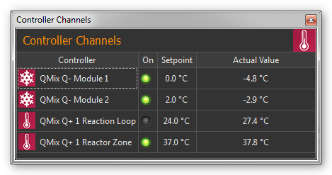
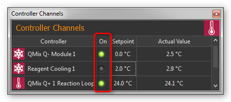
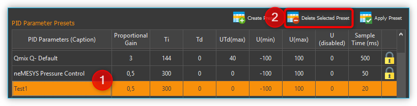
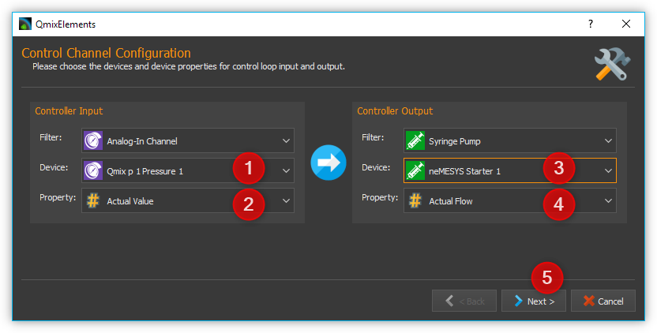
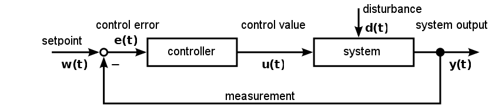

Controller Plugin
Einführung
Das Controller Plugin dient zur Erzeugung benutzerdefinierter Regelkreise.
Liste der Regelkanäle
Alle Qmix Regelkanäle werden in der Liste der Regelkanäle (Controller Channels) angezeigt.
Die unterschiedlichen Kanaltypen (Kühlmodul Q-, Heizmodul Q+ …) können Sie an den unterschiedlichen Symbolen vor dem Kanalnamen unterscheiden (siehe Abbildung oben). Die Liste der Regelkanäle ist ein View, den Sie durch Anklicken und Ziehen der Titelleiste jederzeit an eine andere Position in der grafischen Oberfläche verschieben oder aus der Oberfläche als separates Fenster herauslösen können.
Die Kanalliste zeigt ihnen alle verfügbaren Regelkanäle in Tabellenform an. Folgende Spalten sind vorhanden:
Controller - zeigt den Namen des Regelkanals und den Typ durch ein Symbol an.
On - zeigt durch eine grüne LED ob die Regelung ein- oder ausgeschaltet ist. Klicken Sie die LED an, um die Regelung ein- oder auszuschalten.
Setpoint - enthält den eingestellten Sollwert des Reglers
Actual Value - zeigt den aktuellen Ist-wert
Kanaltypen
Die folgenden Kanaltypen werden im Moment unterstützt:
Schneeflockensymbol - Qmix Q- Kühlmodule |
|
Thermometersymbol - Qmix Q+ Heizmodule und Qmix TC Module |
|
|
Symbol Reglerkurve – dynamisch erzeugte, benutzerdefinierte Kanäle |
Kanalnamen ändern
Sie können den Namen eines Kanals jederzeit ändern und z.B. einen Namen vergeben, der zu Ihrer speziellen Anwendung passt.

Ändern Sie den Namen mit folgenden Schritten:
Klicken Sie doppelt in die Tabellenzelle mit den Namen den Sie ändern möchten.
Geben Sie den neuen Namen in das Editierfenster ein, welches nun eingeblendet wird (siehe Abbildung oben)
Beenden Sie Ihre Eingabe durch Drücken der Return-Taste.
Regelung ein- / ausschalten
Zum Ein- und Ausschalten der Regelung klicken Sie einfach auf die LED des Kanals, den Sie umschalten möchten.
Sollwert eingeben
Klicken Sie zur Eingabe des Sollwertes doppelt in die Setpoint-Spalte des Kanals dessen Sollwert Sie ändern möchten. Geben Sie nun in das Editierfenster das angezeigt wird (siehe Abbildung unten) den Sollwert ein, oder verwenden Sie die Pfeil- Schaltflächen um den Sollwert schrittweise zu verringern oder zu erhöhen.

Kontextmenü für Reglerkanäle
Durch Rechtsklick in die Liste der Reglerkanäle können Sie ein Kontextmenü mit zusätzlichen Funktionen einblenden:

Das Kontextmenü enthält die folgenden Menüpunkte:
|
Configure Channel… Öffnet den Konfigurationsdialog des Kanals zur Konfiguration aller Kanalparameter. |
|
Restore Default Settings Stellt die Standardeinstellungen des Kanals wieder her. |
|
Reset Calibration Setzt die Zweipunktskalierung zurück auf den Skalierungsfaktor 1 und den Offset 0 |
|
Configure scaling… Öffnet den Konfigurationsdialog mit der Seite zur Konfiguration der Reglerskalierung. |
|
Select PID parameters… Öffnet den Konfigurationsdialog mit der Seite zur Auswahl und Erstellung von PID-Parametersätzen. |
|
Delete user channel Wenn der ausgewählte Kanal ein benutzerdefinierter Kanal ist, wird dieser durch Anklicken dieses Menüpunktes gelöscht. Für andere Reglerkanäle ist dieser Menüpunkt ausgegraut. |
|
Create user channel Öffnet den Wizard zur Erstellung eines neuen benutzerdefinierten Reglerkanals. |
Kanaleinstellungen konfigurieren
Um den Konfigurationsdialog (siehe Abbildung unten) zur Einstellung der Skalierung zu öffnen, wählen Sie im Kontextmenü für Reglerkanäle den Menüpunkt .

Die Konfiguration der allgemeinen Kanaleinstellungen sowie die Kalibrierung der Reglerkanäle sind identisch mit der Konfiguration der I/O Plugin-Kanäle. Lesen Sie für eine detaillierte Beschreibung der Konfiguration den Abschnitt I/O Kanal Konfiguration.
Auswahl und Konfiguration von Reglerparametern
Übersicht
Um das Regelverhalten der einzelnen Reglerkanäle optimal an Ihre Anwendung anzupassen, können Sie für jeden einzelnen Kanal die Regelparameter individuell anpassen. Dafür können Sie entweder aus einer Liste von vordefinierten PID Parametersätzen wählen, oder neue Parametersätze erstellen.
Um zur Reglerparameterauswahl zu gelangen, wählen Sie im Kontextmenü für Reglerkanäle den Menüpunkt .

Im oberen Bereich sehen Sie die aktuellen Parameter des Gerätes ❶ (Current Channel Parameters). Im unteren Bereich finden Sie eine Liste mit PID Parameter Presets ❷.
Reglerparameter ändern
Um die aktuellen Reglerparameter zu editieren, klicken Sie mit der Maus im Bereich Current Channel Parameters doppelt in das Feld welches Sie ändern möchten und geben den neuen Wert ein:

PID Parameter Preset auswählen

Wählen Sie aus der Tabelle der vorhanden Parametersätze einen Parametersatz durch Anklicken mit der linken Maustaste aus ❶ und klicken Sie anschließend auf die Schaltfläche Apply Preset ❷ um die Regelparameter zu übernehmen. Die Werte im Bereich Current Channel Parameters ❸ werden mit den neuen Werten aus dem Preset aktualisiert. Schließen die Konfiguration durch Anklicken der Schaltfläche Ok ❹ ab.
Die PID Parameter Presets enthalten bereits vordefinierte Standard-Reglerparameter für verschiedene Qmix Geräte (z.B. Qmix Q+, Qmix Q- oder Qmix TC) oder bestimmtes Zubehör (z.B. Spritzenheizung oder Schlauchheizung).
Tipp
Zur optimalen Anpassung an die Regelstrecken in Ihrer Anwendung können Sie eigene Parametersätze mit Reglerparametern erstellen.
PID Parameter Preset erstellen
Durch Anklicken der Schaltfläche Create Preset ❶ erzeugen sie einen neuen Satz von Reglerparametern ❷. (siehe Abbildung unten) Anschließend können Sie die einzelnen Werte des Parametersets editieren indem Sie doppelt in ein Feld klicken ❸ und einen neuen Wert eingeben.

Vergeben Sie für jeden Parametersatz einen aussagekräftigen, eindeutigen Namen und passen Sie die Reglerparameter an die Regelstrecke in Ihrer Anwendung an. Um geeignete Parameter für einen Regelkreis zu finden, gehen Sie wie im Abschnitt Vorgehensweise für die Einstellung von Reglerparametern beschrieben vor.
Löschen von PID Parameter Presets
Sie löschen einen Reglerparametersatz, indem sie ihn durch Anklicken mit der linken Maustaste auswählen ❶ und anschließend die Schaltfläche Delete Selected Preset ❷ klicken.
Wichtig
Vordefinierte Standard-Reglerparameter sind gesperrt und können nicht gelöscht werden. Gesperrte Parameter erkennen Sie in der Tabelle an dem gelben Schloss.
Benutzerdefinierte Reglerkanäle
Einführung
Sie können benutzerdefinierte Reglerkanäle erzeugen, bei denen Sie beliebige Geräteeigenschaften (Device Properties) als Ein- und Ausgangsgrößen für die Regelschleife verwenden können. Damit wird es z.B. möglich mit Hilfe eines Druckmesskanals eines Qmix p-Gerätes und einer Nemesys Spritzenpumpe eine Druckregelung aufzubauen oder eine druckgesteuerte Dosierung zu realisieren.
Erstellen von Reglerkanälen
Sie öffnen den Dialog zum Erzeugen von Reglerkanälen durch Rechtsklick in die Reglerkanalliste und Auswahl der Menüpunktes im Kontextmenü.

Im Konfigurationswizard der Ihnen nun angezeigt wird, gehen Sie wie folgt vor:
Wählen Sie das Gerät, welches die Messgröße (Eingangsgröße) des Reglers zur Verfügung stellen soll: Controller Input.
Wählen Sie die Geräteeigenschaft (Device Property) aus, die als Messgröße verwendet werden soll.
Wählen Sie das Gerät, welches die Stellgröße (Ausgangsgröße) des Reglers zur Verfügung stellen soll: Controller Output.
Wählen Sie die Geräteeigenschaft (Device Property) aus, die als Stellgröße verwendet werden soll.
Klicken Sie auf die Schaltfläche Next, um die Konfiguration fortzusetzen.
Abschließend erscheint ein Fenster für die Konfiguration und Auswahl von Reglerparametern. Dort können Sie wie im Abschnitt Auswahl und Konfiguration von Reglerparametern beschrieben, die Reglerparameter konfigurieren. Durch Anklicken der Schaltfläche Finish schließen sie die Erstellung des Reglerkanals ab.
Tipp
Sie können die Reglerparameter später jederzeit ändern und so optimal an ihre Regelstrecke anpassen.
Änderung der Stellgrößenskalierung oder -einheit
Die Stellgröße, wie zum Beispiel die Flussrate eines Nemesys-Dosiersystems bei einer Druckregelung oder der Wert eines analogen Ausgangs bei einer Temperaturregelung, wird durch den PID-Regelalgorithmus ermittelt und unskaliert an das entsprechende Gerät ausgegeben. Das bedeutet, dass sie, die Reglerparameter, besonders die Stellgrößengrenzen, jedes Mal neu anpassen müssen, wenn sie die Skalierung oder die Einheit des entsprechenden Gerätes ändern. Bei einem Nemesys-Dosiersystem trifft dies auch zu, wenn sie die Spritzengröße ändern, da sich hierdurch der Flussratenbereich ändert.
Wichtig
Wenn sie die Skalierung oder Einheit eines Gerätes ändern, das Bestandteil eines Regelkreises ist, müssen sie die Reglerparameter kontrollieren und diese gegebenenfalls anpassen. Bei einem Nemesys-Dosiersystem trifft dies auch zu, wenn sie die Spritzengröße ändern.
Vorgehensweise für die Einstellung von Reglerparametern
Einfacher geschlossener Regelkreis und PID-Reglergleichung
Der Regler (z.B. PID-Regler) und die zu regelnde Strecke (z.B. zu temperierendes System) bilden zusammen ein rückgekoppeltes System, den einfachen geschlossenen Regelkreis. (siehe Abbildung unten)
Ein PID-Regler ermittelt hierbei die Stellgröße u zum Zeitpunkt t1 nach folgender Gleichung.

Die Stellgröße enthält 3 Anteile.
Der Proportionalanteil (P-Anteil) bildet mittels des Faktors Kp die direkte Auswirkung des Fehlers auf die Stellgröße. |
|
|
Der Integrieranteil (I-Anteil) errechnet die zeitliche Summe des Fehlers und bildet sie mittels Kp und der Zeitkonstanten Ti auf die Stellgröße ab. Je größer Kp und je kleiner Tidesto größer wird der I-Anteil der Stellgröße. |
|
Der Differenzieranteil (D-Anteil) richtet sich nach den zeitlichen Änderungen des Istwertes und bildet diese über Kp und TD auf die Stellgröße ab. |


{kind=link}
{kind=link}
{kind=link}
Vorbereitung der Reglereinstellung in CETONI Elements
Zunächst sollten sie sich den aktuellen Wert und die Stellgröße ihres Regelkanals im Plot des Data-Loggers anzeigen lassen. (siehe Kapitel CSV-Datenlogger) Sie können sich auch den Sollwert anzeigen lassen ❶ . Dies ist nicht unbedingt erforderlich, da sie ihn im Allgemeinen kennen, erleichtert aber die Orientierung im Plot. (siehe Abbildung unten)

Die Einstellung im Bereich Log Interval ❷ hängt von der Änderungshäufigkeit des aktuellen Wertes des Reglerkanals ab. Sie sollten einen brauchbaren Graphen erhalten, wenn sie für Log Interval die gleiche Größe benutzen, die sie für den Wert Sample Time ihres Reglerparametersatzes verwendet haben.
Auswahl des Parameters Sample Time
Der Parameter Sample Time ist definiert als die Zeitdauer zwischen zwei Berechnungen der Stellgröße des Reglers. Je kleiner dieser Wert gewählt wird desto häufiger wird die Stellgröße berechnet. Als Faustformel kann man sich merken, dass Sample Time nicht größer als ein Zehntel der kleinsten im Regelkreis vorkommenden Zeitkonstante sein sollte. Erfahrungsgemäß konnten bei folgenden Geräten mit den angegebenen Zeitkonstanten brauchbare (stabile Regelung) Ergebnisse erzielt werden:
Anwendung |
Sample Time (ms) |
|---|---|
Qmix Q+ |
500 |
Druckregelung mit Nemesys und Qmix p |
50 |
Tipp
Für die Sample Time sollten Werte gewählt werden, die kleiner oder gleich 1/10 der kleinsten im Regelkreis vorkommenden Zeitkonstante sind.
Festlegen der Stellgrößengrenzen
Die minimale (Umin) und maximale (Umax) Stellgröße der CETONI Elements-Regler kann limitiert werden. Die Stellgrößen sollten über einen ausreichenden Hub verfügen, sodass die angestrebten Sollwerte erreicht werden können. Gleichzeitig sollten sie darauf achten, dass ihre Regelstrecke nicht durch zu groß gewählte Grenzwerte beschädigt wird. (z.B. zu hohe Flußrate eines Nemesys Dosiersystems bei Druckregelung führt zur Zerstörung des fluidischen Systems) Dies sollten sie testen, indem sie ihre Regelstrecke mit dem oberen und unteren Limit der Stellgröße beaufschlagen. (z.B. mit Flußrate, die dem Stellgrößenlimit entspricht, dosieren) Weiterhin müssen sie einen Wert wählen, den die Stellgröße annehmen soll, wenn der Reglerkanal deaktiviert (Udisabled) wird (im Allgemeinen Null).
Achtung
Unzureichende Limitierung der Stellgrößen kann zur Beschädigung ihres zu regelnden Systems führen.
Ermittlung von PI-Reglerparametern am Beispiel einer Temperaturregelstrecke
Eine Temperaturregelstrecke ist im Allgemeinen eine Regelstrecke welche eine oder mehrere Verzögerungszeitkonstanten enthält. Häufig kann sie durch eine Verzögerungstrecke 1. Ordnung approximiert werden. Nachfolgend die Sprungantwort einer Verzögerungstrecke 1. Ordnung im Bildbereich.

Ziel der Reglereinstellung ist es, die Streckenzeitkonstante T1 zu kompensieren und die Reglerverstärkung Kp anzupassen, sodass ein gutes Führungsverhalten des geschlossenen Regelkreises erzielt wird. Da T1 in der Praxis häufig nicht bekannt ist, kann man sich durch folgendes Verfahren schrittweise einem brauchbaren Ergebnis annähern.

Die Werte für Sample Time, Umin, Umax und Udisabled wählen sie entsprechend der Empfehlungen in den vorangegangenen Abschnitten. Die Werte der einzelnen Reglerzeitkonstanten setzen sie zu Null. Hiermit deaktivieren sie den I- und D-Anteil des PID-Reglers. Hieraus folgt eine vereinfachte Reglergleichung.
\[U = {K_{p} \cdot e}\]Wählen sie für den P-Anteil einen moderaten Verstärkungsfaktor. Bedenken sie, dass sich der Fehler der Regelgröße über Kp direkt auf die Stellgröße U auswirkt. Ein zu großer Wert für KP kann den Regler somit permanent in die Sättigung treiben.
Beaufschlagen sie ihren Regelkreis mit einem Sollgrößensprung, zum Beispiel indem sie die Solltemperatur von Raumtemperatur auf 50°C ändern und die Regelung aktivieren. (siehe Abschnitt Sollwert eingeben und Regelung ein- / ausschalten)
Bei einer Verzögerungsstrecke 1. Ordnung wird sich der Istwert wie in folgender Abbildung dargestellt verhalten.

In Abhängigkeit von der gewählten Reglerverstärkung Kp wird sich die Istgröße unterschiedlich schnell in die Nähe des Sollwertes begeben. Außerdem wird sich eine bleibende Regelabweichung einstellen. Ein P-Regler ist nämlich nicht in der Lage eine Verzögerungstrecke 1. Ordnung vollständig auszuregeln. Ist Kp zu klein eingestellt, verläuft die Istwertkurve zu flach und es dauert sehr lang, bis sich der Istwert in der Nähe des Sollwertes befindet. (siehe Abbildung oben, Verlauf für Kp = 1) Ein zu großer Wert für Kp führt dagegen zum Überschwingen, gegebenenfalls zu einer Dauerschwingung um den Sollwert. (siehe Abbildung oben, Verlauf für Kp = 1) Im dargestellten Beispiel erreicht der Istwert bei Kp = 3 recht zügig einen stationären Wert ohne überzuschwingen. Aus diesem Grund kann man mit diesem Wert weiterarbeiten.
Im nächsten Schritt müssen sie Ti so einstellen, dass die bleibende Regelabweichung verschwindet. Beginnen sie zunächst mit einer großen Zeitkonstanten Ti (kleiner Integrieranteil).
Beaufschlagen sie ihren Regelkreis mit einem Sollgrößensprung, zum Beispiel indem sie die Solltemperatur von Raumtemperatur auf 50°C ändern und die Regelung aktivieren. (siehe Abschnitt Sollwert eingeben und Regelung ein- / ausschalten)
Sie können die Zeitkonstante Ti verringern, wenn sie die Zeit bis zum dauerhaften Erreichen des Sollwertes verringern möchten. Sie müssen hierbei beachten, dass eine zu klein gewählte Zeitkonstante Ti (großer Integrieranteil) zum Schwingen des Regelkreises führen kann. Im dargestellten Diagramm kann man sehen, dass eine Integrierzeitkonstante von Ti=260s ein gutes Ergebnis liefert. Die Istgröße entspricht der Sollgröße und das System schwingt nicht. Mit Ti = 1000s wird im dargestellten Zeitbereich die Sollgröße überhaupt nicht erreicht. Ti=20s führt zu einem starken Überschwingen des Systems. (siehe Abbildung unten)

In sehr vielen Fällen (z.B. Temperaturregelung) ist ein PI-Regler vollkommen ausreichend. Im stationären Zustand verbleibt keine Regelabweichung und die Dynamik ist zufriedenstellend. Soll der Regler auch robust gegenüber plötzlich auftretenden Störungen sein, so kann es sinnvoll sein, einen Differenzieranteil einzubeziehen. Die detaillierte Behandlung von Stabilität, Führungs- und Störverhalten der unterschiedlichen Regelkreissysteme würde diese praxisnahe Einführung übersteigen. Deshalb wird an dieser Stelle auf die Regelungstechnikliteratur verwiesen.

Erstellen Sie nun ein PID Parameter Preset mit den Werten die Sie ermittelt haben und vergeben Sie einen eindeutigen Namen.